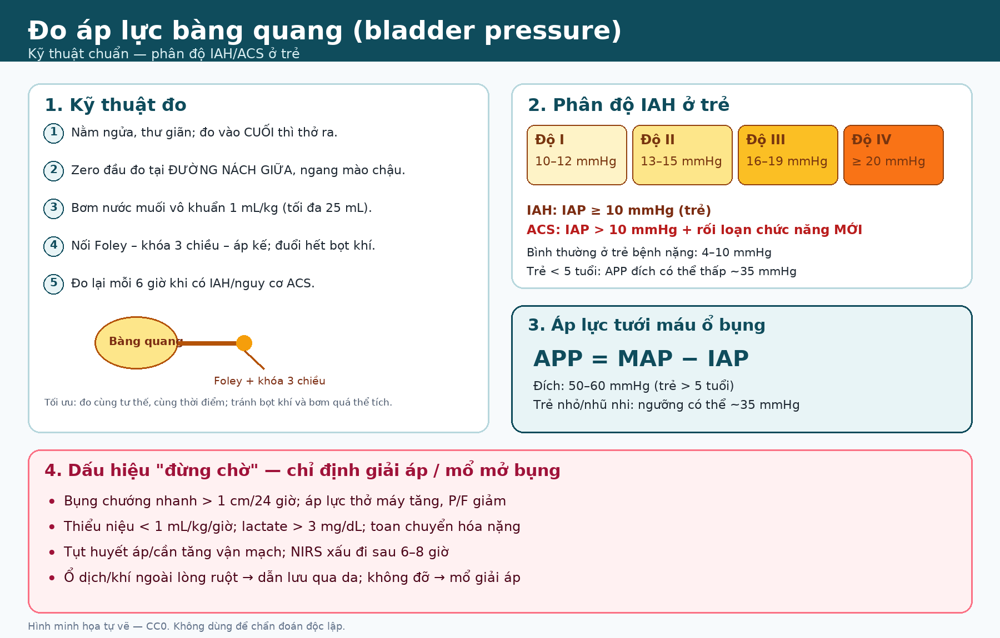

646 — Hội chứng khoang bụng ở trẻ: đo áp lực bàng quang, phân độ I–IV & xử trí / Pediatric abdominal compartment syndrome
Tags: pattern:tang-ap-luc-o-bung vung:o-bung score:WSACS-IAH protocol:do-ap-luc-bang-quang protocol:CT-bung
Mức chắc chắn (certainty): tổng hợp y văn (literature synthesis) — định nghĩa/ngưỡng lấy từ đồng thuận WSACS và review nhi khoa; ca minh họa là ca nguyên văn có ảnh CC BY-NC-ND (giữ nguyên bản). Chưa có thử nghiệm ngẫu nhiên riêng cho ngưỡng mổ giải áp ở trẻ.
1. Tổng quan bệnh học – cơ chế hình ảnh
- Áp lực ổ bụng (intra-abdominal pressure, IAP) là áp lực bên trong khoang bụng. Ở trẻ bệnh nặng, IAP bình thường khoảng 4–10 mmHg (trẻ thở máy ~7 ± 3 mmHg); ở trẻ khỏe, thở tự nhiên có thể gần 0 mmHg.
- Tăng áp lực ổ bụng (intra-abdominal hypertension, IAH): IAP ≥ 10 mmHg kéo dài hoặc lặp lại ở trẻ (người lớn ≥ 12 mmHg).
- Hội chứng khoang bụng (abdominal compartment syndrome, ACS): IAH + rối loạn chức năng cơ quan MỚI hoặc nặng lên. Ở trẻ, ngưỡng là IAP > 10 mmHg, không phải > 20 mmHg như người lớn — vì MAP của trẻ thấp hơn, nên chỉ cần IAP tăng vừa đã đủ làm giảm áp lực tưới máu.
- Phân độ IAH ở trẻ (WSACS):
- Độ I: 10–12 mmHg
- Độ II: 13–15 mmHg
- Độ III: 16–19 mmHg
- Độ IV: ≥ 20 mmHg
- Áp lực tưới máu ổ bụng (abdominal perfusion pressure, APP): APP = MAP − IAP. Đích ở trẻ > 5 tuổi: 50–60 mmHg; ở trẻ < 5 tuổi/ nhũ nhi, ngưỡng tới hạn có thể thấp ~35 mmHg do MAP sinh lý thấp hơn. APP thấp là dấu hiệu tưới máu tạng kém, không chỉ là con số IAP.
- TẠI SAO trẻ dễ bị ACS hơn người lớn? Khoang bụng nhỏ, thành bụng ít dự trữ thể tích; dù thành bụng đàn hồi hơn, chỉ một lượng dịch/khí/tạng to nhỏ cũng làm IAP tăng nhanh. Trẻ còn MAP thấp, nên cùng một IAP sẽ cho APP thấp hơn.
- Cơ chế tổn thương đa cơ quan:
- Hô hấp: IAP truyền lên lồng ngực → giảm compliance, tăng áp lực đỉnh (PIP), xẹp phổi đáy, giảm oxy hóa, tăng CO₂.
- Tuần hoàn: chèn ép tĩnh mạch chủ dưới → giảm hồi lưu, CVP có thể giả huyễn cao dù giảm thể tích; giảm cung lượng tim, tụt huyết áp.
- Thận: chèn ép nhu mô thận và tĩnh mạch thận → thiểu niệu/oliguria, tăng creatinine, có thể hoại tử ống thận.
- Tiêu hóa: giảm tưới máu ruột → thiếu máu, tăng tính thấm, translocation vi khuẩn, hoại tử ruột.
- Thần kinh: tăng áp lực lồng ngực → giảm hồi lưu tĩnh mạch não → tăng áp lực nội sọ.
- Ngưỡng định lượng/dịch tễ:
- IAH/ACS gặp 10–20% ở NICU/PICU; 17–63% ở PICU chuyên ghép gan.
- Tử vong 40–100%, cao hơn ở sơ sinh và ở trẻ không được mổ giải áp.
- IAH thường gặp gấp 2–3 lần ACS (ví dụ IAH 9–12,6% và ACS 4% trong các nghiên cứu).
- Tăng đường kính bụng > 1 cm/24 giờ, tăng nhu cầu thở máy sau 8–12 giờ, NIRS xấu sau 6–8 giờ, nước tiểu < 1 mL/kg/giờ là các mốc cảnh báo sớm.

Hình minh họa tự vẽ (CC0): zero tại đường nách giữa ngang mào chậu, bơm 1 mL/kg tối đa 25 mL, đo cuối thì thở ra; phân độ I–IV và các dấu hiệu “đừng chờ”.2. Mẫu hình + chẩn đoán phân biệt theo nguyên nhân (gamut)
2.1. ACS nguyên phát (primary ACS) — nguyên nhân trong ổ bụng
- Chấn thương bụng/khung chậu: máu tụ sau phúc mạc, vỡ tạng, chèn gạc cầm máu.
- Bệnh ruột: viêm ruột hoại tử (NEC) ở sơ sinh, tắc ruột, ileus, viêm phúc mạc, thủng ruột.
- Dịch/khí: cổ trướng, tràn khí phúc mạc, nang/khối lớn, u bụng, viêm tụy cấp (hoại tử, tụ dịch).
- Thành bụng: gastroschisis, omphalocele, thoát vị hoành (CDH) sau mổ, đóng bụng căng, bỏng vòng quanh bụng.
- Sau mổ: ghép gan, ghép thận, cắt ruột, đóng bụng thì đầu.
2.2. ACS thứ phát (secondary ACS) — nguyên nhân ngoài ổ bụng
- Hồi sức dịch lớn (sốc chấn thương, sốc nhiễm khuẩn, bỏng, sốc tim), truyền máu khối lượng lớn, rối loạn đông máu.
- Tăng tính thấm mao mạch: sepsis, SIRS, bỏng, pancreatitis, suy tim, thẩm phân.
- Sau ghép tạng (đặc biệt gan), ECMO, suy thận/thiểu niệu.
- Cơ chế: phù tạng + dịch trong lòng ruột + thành bụng cứng → IAP tăng dù không có khối choán chỗ.
2.3. Gamut theo hình ảnh
- Bụng chướng căng, vòng bụng tăng nhanh: ACS cho đến khi chứng minh ngược lại.
- Cổ trướng lượng nhiều + chèn ép tĩnh mạch chủ dưới: nghĩ ACS do dịch; dẫn lưu dịch vừa chẩn đoán vừa điều trị.
- Ruột giãn, thành ruột mỏng, khí trong thành/mạch cửa: thủng/hoại tử ruột — ACS có thể là hậu quả, nhưng nguyên nhân ngoại khoa phải xử lý trước.
- Tụy hoại tử + dịch sau phúc mạc: ACS thứ phát do viêm tụy; đừng nhầm dịch tụy với “cổ trướng đơn thuần”.
- Sau ghép gan: gan to, cổ trướng, giảm tưới máu gan: large-for-size/ACS; siêu âm Doppler động mạch gan và tĩnh mạch cửa.
2.4. Phân biệt nhanh trên lâm sàng
- Bụng căng + suy hô hấp + thiểu niệu + tụt huyết áp: ACS.
- Bụng căng + sốt + đau + khí tự do: thủng tạng/viêm phúc mạc — mổ nguyên nhân, không chỉ giải áp.
- Bụng căng + cổ trướng + gan to: bệnh gan/tim/thận; đo IAP trước khi kết luận “cổ trướng đơn thuần”.
- Bụng căng + khí dưới da/trung thất ở trẻ thở máy: nghĩ rò khí barotrauma (bài 617), không vội mổ bụng.
3. Bảng so sánh phân biệt (ma trận đối chiếu)
| Thực thể | Hình ảnh/lâm sàng điển hình | Chốt vào (rule-in) | Chốt loại (rule-out) | Gợi ý xác nhận |
|---|---|---|---|---|
| ACS nguyên phát | Bụng chướng nhanh, IAP ≥ 10 + rối loạn cơ quan; CT: dịch/máu/khối, xẹp đáy phổi, chèn ép IVC | IAP > 10 mmHg + thiểu niệu/tăng PIP/tụt HA mới | IAP bình thường + bụng mềm, không rối loạn cơ quan → không phải ACS | Đo bàng quang, CT bụng, siêu âm tim |
| ACS thứ phát (hồi sức dịch) | Phù toàn thân, cổ trướng, thành bụng căng; sau sốc/bỏng/truyền máu | Tiền sử hồi sức dịch lớn + IAP tăng dần + APP thấp | Có ổ dịch/máu khu trú cần dẫn lưu → ACS nguyên phát | Cân nặng, bilan dịch, IAP, siêu âm |
| Cổ trướng căng (tense ascites) | Dịch tự do, gan/lách bị đẩy, IVC chèn ép | Dịch tự do + IAP tăng + đáp ứng sau dẫn lưu | IAP không giảm sau dẫn lưu → còn nguyên nhân khác | Siêu âm, dẫn lưu chẩn đoán |
| Ileus/tắc ruột | Ruột giãn, mức khí–dịch, bụng chướng | Khí/dịch trong lòng ruột + không khí tự do | Khí tự do/thành ruột mỏng → thủng | X-quang bụng, CT |
| Thủng tạng/viêm phúc mạc | Khí tự do, dịch tự do, thành ruột dày/mỏng bất thường | Khí ngoài lòng + bụng gồng + sốt | Không khí tự do + bụng mềm + IAP tăng đơn thuần → ACS do barotrauma | CT bụng có cản quang |
| Rò khí barotrauma (bài 617) | Khí phúc mạc ở trẻ thở máy, bụng mềm, có tràn khí trung thất | Khí tự do + bụng mềm + tiền sử thở máy áp lực cao | Bụng gồng, khí trong thành ruột/mạch cửa → thủng tạng | X-quang/CT, theo dõi lâm sàng |
4. Protocol đo IAP + phân độ + xử trí
4.1. Khi nào đo?
- Đo IAP khi có ≥ 1 yếu tố nguy cơ (chấn thương bụng, NEC, ileus, cổ trướng, bỏng bụng, sau ghép gan, hồi sức dịch lớn, suy hô hấp nặng).
- Đo lại mỗi 6 giờ khi đã có IAH hoặc có nguy cơ ACS; đo sau mỗi can thiệp (dẫn lưu, mổ, thay đổi PEEP).
4.2. Kỹ thuật đo qua bàng quang (gold standard)
- Tư thế: nằm ngửa, thư giãn; đo cuối thì thở ra.
- Zero: đầu đo đặt tại đường nách giữa, ngang mào chậu.
- Thể tích: bơm nước muối vô khuẩn 1 mL/kg, tối đa 25 mL qua Foley.
- Hệ thống: Foley – khóa 3 chiều – áp kế; đuổi hết bọt khí, kiểm tra không rò.
- Đọc: IAP theo mmHg; ghi kèm MAP để tính APP = MAP − IAP.
- Lỗi thường gặp: bơm quá nhiều dịch → IAP giả cao; bọt khí; đầu đo sai vị trí; bàng quang co thắt; đo khi bệnh nhân ho/đang thở mạnh; ống thông bị gập.
4.3. Xử trí theo bậc
- Bậc 1 — giảm thể tích trong lòng ruột: đặt sonde dạ dày, thuốc tăng nhu động, thụt/ống trực tràng, ngừng nuôi ăn đường ruột tạm thời.
- Bậc 2 — giảm thể tích ngoài lòng ruột: dẫn lưu dịch/máu/khí qua da (percutaneous catheter drainage, PCD) khi có ổ dịch; đặc biệt hiệu quả trong NEC, cổ trướng lượng nhiều, bỏng, IAH độ III/IV có rối loạn cơ quan.
- Bậc 3 — cải thiện compliance thành bụng: giảm đau/an thần sâu, thuốc giãn cơ ngắn hạn, tư thế reverse Trendelenburg; tránh đầu cao > 30°.
- Bậc 4 — tối ưu huyết động: hạn chế dịch tinh thể, đạt cân bằng dịch âm/không, lọc máu khi cần, vận mạch để duy trì APP.
- Bậc 5 — mổ giải áp (decompressive laparotomy, DL): mở bụng cấp cứu, để bụng mở tạm thời, NPWT/đóng bụng thì sau khi hết phù.
- Chỉ định DL: theo kinh nghiệm, khi 2 tiêu chí chính hoặc 1 chính + 3 phụ:
- Chính: suy hô hấp nặng/tăng PIP, thiểu niệu kéo dài, lactate > 3 mg/dL.
- Phụ: cần tăng vận mạch, rối loạn đông máu, tuần hoàn bàng hệ, tăng áp lực nội sọ.
- Không chờ đợi: bụng chướng nhanh > 1 cm/24 giờ, tăng nhu cầu thở máy 8–12 giờ, NIRS xấu 6–8 giờ, nước tiểu < 1 mL/kg/giờ → đánh giá ngay khả năng DL.
4.4. Sơ đồ xử trí
flowchart TD
A[Trẻ có nguy cơ: chấn thương, NEC, cổ trướng, sau ghép, hồi sức dịch] --> B[Đo IAP qua bàng quang + MAP → APP]
B --> C{IAP ≥ 10 mmHg?}
C -->|Không| D[Tiếp tục theo dõi, xử lý nguyên nhân]
C -->|Có| E{Có rối loạn chức năng MỚI?}
E -->|Không| F[IAH: điều trị bậc 1–2, đo lại mỗi 6 giờ]
E -->|Có| G[ACS: điều trị bậc 1–4 khẩn]
G --> H{Có ổ dịch/khí ngoài lòng?}
H -->|Có| I["Dẫn lưu qua da (PCD)"]
H -->|Không| J[Giảm thể tích lòng ruột + giãn cơ + tối ưu huyết động]
I --> K{Đáp ứng?}
J --> K
K -->|Có| L[Tiếp tục điều trị, đo lại]
K -->|Không| M[DL + bụng mở tạm thời/NPWT]
M --> N[Đóng bụng thì sau khi hết phù]
4.5. Điểm cần nhớ theo bối cảnh
- Sơ sinh sau mổ CDH: nguy cơ ACS rất cao; có thể dùng áp lực bàng quang để quyết định đóng bụng chậm thay vì đóng căng thì đầu.
- Sau ghép gan: IAH 17–63%; theo dõi IAP, siêu âm Doppler mạch gan, chức năng gan.
- Viêm tụy cấp: dịch tụy + phù tạng → ACS thứ phát; dẫn lưu ổ dịch và kiểm soát dịch là chìa khóa.
- Bỏng bụng vòng quanh: thành bụng cứng như “áo giáp” → cần mở bụng giải áp sớm.
5. Biến thể bình thường và cạm bẫy
- Dùng ngưỡng người lớn (> 20 mmHg) cho trẻ là sai: trẻ có thể có ACS với IAP > 10 mmHg; bỏ sót vì “chưa tới 20” là lỗi chết người.
- CVP cao không loại trừ giảm thể tích: IAP cao truyền vào lồng ngực làm CVP giả cao; đánh giá kèm siêu âm tim, lactate, nước tiểu.
- Bơm quá thể tích vào bàng quang → IAP giả cao, dẫn tới can thiệp không cần thiết; tuân thủ 1 mL/kg, tối đa 25 mL.
- Bàng quang co thắt/không có Foley → đo sai; xem xét đo dạ dày (ống thông có bóng) hoặc trực tràng khi không thể đo bàng quang.
- APP thấp ở nhũ nhi là sinh lý: đừng áp dụng đích 50–60 mmHg cho trẻ < 5 tuổi; ngưỡng có thể ~35 mmHg.
- ACS do barotrauma vs thủng tạng: trẻ thở máy có khí tự do nhưng bụng mềm, không gồng, có tràn khí trung thất → nghĩ khí lan từ phổi (Macklin), tránh mổ bụng oan; ngược lại, bụng gồng + khí trong thành ruột/mạch cửa → thủng tạng.
- Đừng chỉ nhìn CT: hình ảnh (cổ trướng, chèn ép IVC, xẹp đáy phổi, tưới máu thận không đồng nhất, thành ruột ngấm bất thường, phù dưới da) gợi ý nhưng không đặc hiệu; chẩn đoán dựa vào IAP + rối loạn cơ quan.
- Sau khi giải áp: có thể tái phát IAH khi đóng bụng thì sau; theo dõi IAP và đóng bụng theo bậc.
6. Tự lượng giá — Blind Quiz
Ca 1 — Bé trai 2 tuổi 11 tháng, B-ALL đang điều trị pegaspargase, đau bụng dữ dội, bụng chướng, tụt huyết áp. Đọc CT bụng.

- Gợi ý lâm sàng: đau bụng sau pegaspargase, bụng chướng, tụt huyết áp; IAP đo qua bàng quang 35 mmHg, lactate 3,16 mmol/L.
- Câu hỏi: Chẩn đoán hình ảnh? Vì sao đây là ACS? APP bằng bao nhiêu và ý nghĩa? Bước xử trí?
Bấm để hiện đáp án (findings + chẩn đoán)
- Dấu hiệu: (A) CT không cản quang — vùng giảm đậm độ nhẹ ở đuôi tụy; (B) CT có cản quang — nhiều ổ giảm đậm độ, bờ không rõ = hoại tử tụy, kèm dịch phúc mạc và tràn dịch màng phổi.
- Chẩn đoán: viêm tụy cấp do asparaginase (AAP) biến chứng ACS (IAP 35 > 10 + tụt huyết áp/lactate tăng). Nếu MAP = 65 mmHg, APP = 65 − 35 = 30 mmHg, thấp hơn đích 50–60 → tưới máu tạng kém.
- Xử trí: nhịn ăn, giảm đau, dịch hạn chế, dẫn lưu dịch nếu có ổ; không đỡ → mổ giải áp + NPWT. Ca nguồn được DL + NPWT, hồi phục.
- Nguồn ảnh: Zhang H, Lu W. Transl Pediatr 2025 (PMC12163796, Fig. 1), CC BY-NC-ND 4.0 — giữ nguyên bản, không crop/ghép.
Ca 2 — Sơ sinh sau mổ thoát vị hoành, đang ECMO, bụng chướng. Đọc sơ đồ kỹ thuật và tính toán.
- Gợi ý lâm sàng: sau đóng thành bụng, PIP tăng, nước tiểu giảm; IAP 17 mmHg, MAP 50 mmHg.
- Câu hỏi: Phân độ IAH? APP? Có nên đóng bụng thì đầu không? Theo dõi gì?
Bấm để hiện đáp án (findings + chẩn đoán)
- Phân độ: IAP 17 mmHg = IAH độ III (16–19 mmHg); nếu có rối loạn cơ quan mới → ACS.
- APP = 50 − 17 = 33 mmHg, rất thấp (ngưỡng tới hạn ở nhũ nhi có thể ~35 mmHg).
- Xử trí: trì hoãn đóng bụng, giảm áp lực đường thở, dẫn lưu dịch/khí, tối ưu huyết động; theo dõi IAP mỗi 6 giờ. Ca nguồn dùng áp lực bàng quang để quyết định đóng bụng chậm ở trẻ CDH/ECMO.
- Nguồn hình: tự vẽ, CC0.
Ca 3 — Trẻ 3 tuổi sau chấn thương bụng, bụng chướng, tụt huyết áp. CT có dịch tự do và máu tụ sau phúc mạc.
- Gợi ý: IAP 24 mmHg, MAP 65 mmHg, lactate 4,2 mg/dL, nước tiểu 0,5 mL/kg/giờ.
- Câu hỏi: Chẩn đoán? APP? Chỉ định nào cho mổ giải áp? Có nên chỉ dẫn lưu qua da không?
Bấm để hiện đáp án (findings + chẩn đoán)
- Chẩn đoán: ACS nguyên phát do máu tụ sau phúc mạc/chấn thương; APP = 65 − 24 = 41 mmHg.
- Chỉ định DL: 2 tiêu chí chính (thiểu niệu, lactate > 3 mg/dL) + tăng PIP/tụt HA → mổ giải áp; nếu có ổ máu/dịch khu trú, PCD có thể là bước cầu nối nhưng không thay thế DL khi đang suy cơ quan.
- Lưu ý: không chọc dò mù khi nghi máu tụ sau phúc mạc/tổn thương mạch; kiểm soát nguồn chảy máu là ưu tiên.
Bài liên quan chéo
- 600 – Tổng quan Hệ Nhi khoa
- 617 – Hội chứng rò khí ở nhũ nhi: tràn khí phúc mạc do barotrauma vs thủng tạng
- 667 – U mạch máu gan ở trẻ (IHH lan tỏa gây ACS)
- 687 – Theo dõi & điều trị IHH sau can thiệp
- 623 – Chấn thương tụy–tá tràng ở trẻ
- 626 – Viêm tụy cấp ở trẻ (biến chứng tụ dịch/WON)
- 668 – Theo dõi sau tháo căng tủy & bàng quang thần kinh (bàng quang thần kinh — đo áp lực bàng quang khác mục đích)
Ảnh
- Tên file
646_acs_<Modality>_...; nguồn + giấy phép từng ảnh trongimages/CREDITS.md. - Ảnh CT là CC BY-NC-ND 4.0 — giữ nguyên bản, không crop/ghép. Sơ đồ do bài tự vẽ, CC0.
- Không tải Google Images/AuntMinnie; nguồn đóng chỉ dẫn link trong
sources.md.
Không dùng để chẩn đoán độc lập khi chưa có người hướng dẫn.